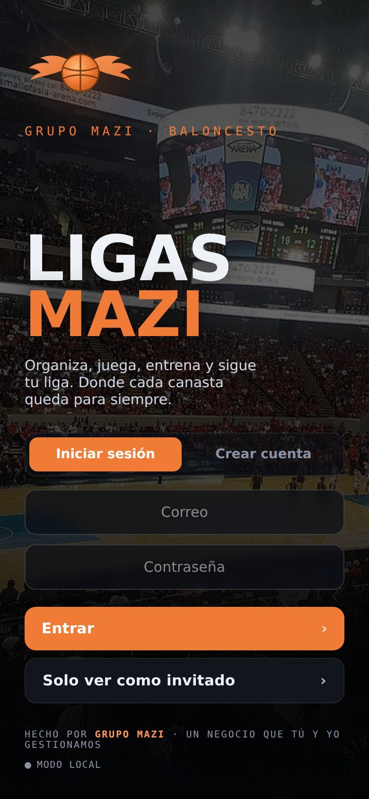
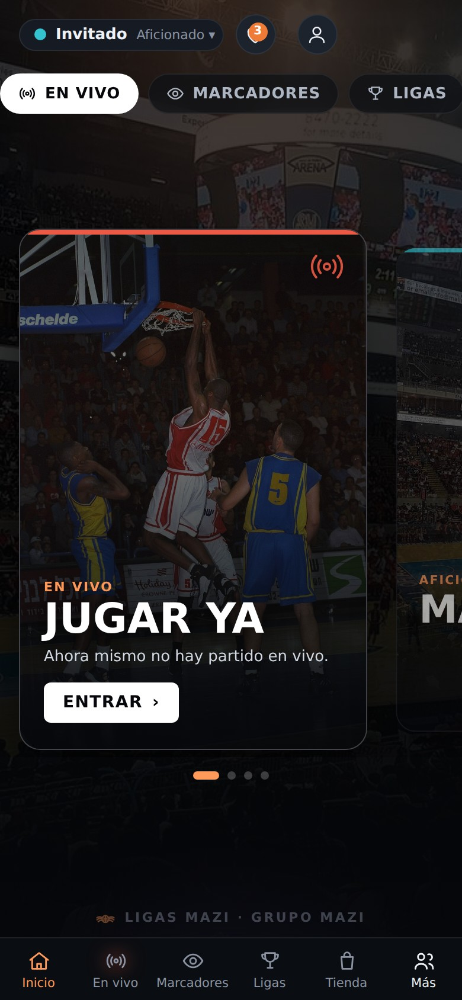
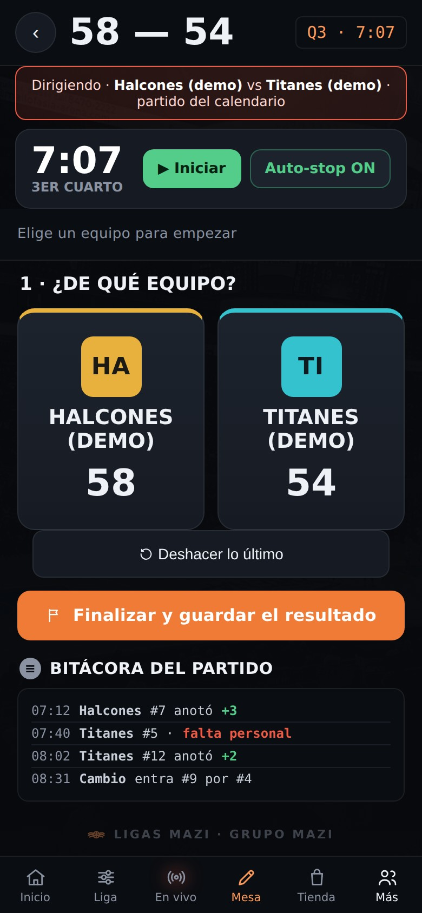
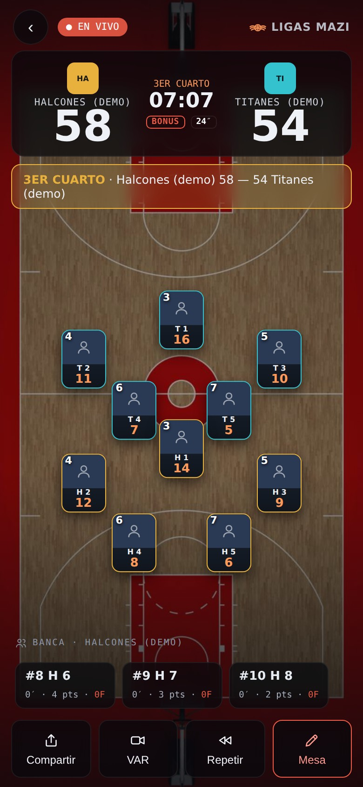
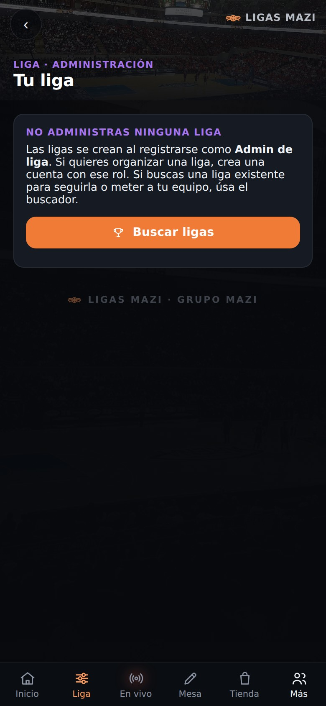
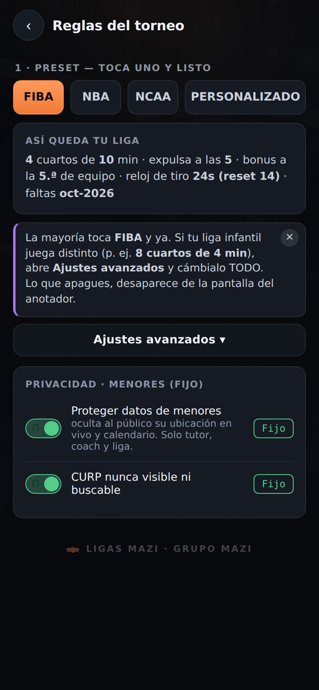

GRUPOMAZI
Todo gran proyecto comienza con una base sólida. Nosotros la construimos, y también la última pieza que le da vida.
Páginas web · Software · Marketing · Video y fotografía · Gestión de negocios · Tiempos y movimientos

Que convierten visitas en oportunidades
Creamos espacios digitales que representan tu negocio y generan confianza.

Que se adapta a cómo trabajas
Sistemas que eliminan obstáculos y conectan procesos.


Encontramos el tiempo que se pierde
Medimos cómo trabaja tu empresa — y te lo devolvemos.

Decisiones con claridad y control
Organizamos la información, los procesos y la operación.

Comunica antes de decir una palabra
Capturamos la esencia de tu marca.
Esto no es un portafolio: está corriendo.
Cada pieza de este recorrido es software nuestro, en funcionamiento.
Seis pantallas. Un solo sistema.
Ligas Mazi — cuentas reales, pagos, la mesa de control y el marcador en vivo. Una liga entera en un teléfono.
TÓCALO
Lo que vendemos no se explica: se aprieta.
Tres piezas de esta misma página. Ninguna es un video.
Escribe con tu teclado. Las letras se pintan en nuestra tipografía, la que fundimos aquí.
No es un filtro encima:
es la paleta completa.
De aquí salió todo. Ahora entra tú.
QUÉ HACEMOS
No vendemos piezas sueltas: vendemos un sistema.
Esta pieza no cargó en tu navegador. Escríbenos y te la enseñamos.
EL TALLER
Dos mil doscientos años de escritura, y la última la hicimos nosotros.
Esta pieza no cargó en tu navegador. Escríbenos y te la enseñamos en vivo — es la que más nos gusta.
Las letras no son imágenes: se calculan al vuelo con la misma fábrica con la que fundimos nuestra tipografía.
CÓMO TRABAJAMOS
No nos contratas: nos integras.
Construimos la base, y nos quedamos a cuidar lo que se levanta sobre ella — la entrega es donde empieza nuestro trabajo.
Cuando construimos nuestras propias herramientas, también construimos tu independencia.
CONTACTO
Cuéntanos qué se está rompiendo.
No hace falta que traigas un proyecto armado ni un presupuesto. Con el síntoma basta: nosotros lo aterrizamos.
¿QUIERES TRABAJAR CON NOSOTROS?
Aquí tu crecimiento depende de tu impacto: genera clientes, participa en proyectos o haz ambas cosas, y gana en proporción al valor que aportas, definido antes de empezar, no al final.
Mándanos lo que sabes hacer